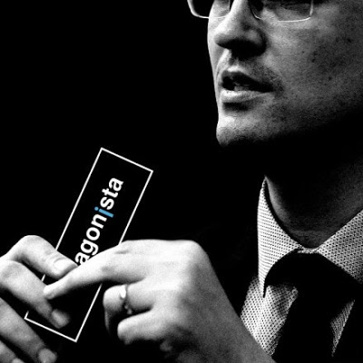

Criando Minha Primeira Página em HTML
| Home | Fotos | Notícias | Contatos |
| A Tv Cabo Branco lançou, no último sábado (20), a primeira campanha institucional de 2021. O filme busca mostrar que a predileção do telespectador está relacionada à qualidade da entrega do nosso jornalismo, que planta o respeito com a informação e colhe a preferência do telespectador paraibano. | veja mais no site | |
|  | O antagonista notificou que o procurador Deltan Dallagnol, coordenador da Operação Lava Jato no Paraná, teria trabalhado em conjunto com o portal de notícias. O Antagonista para impedir que Ivan Monteiro assumisse a presidência do Banco do Brasil em novembro de 2018. É o que afirma reportagem do site The Intercept Brasil publicada nesta 2ª (20.jan.2020). | veja mais no site |